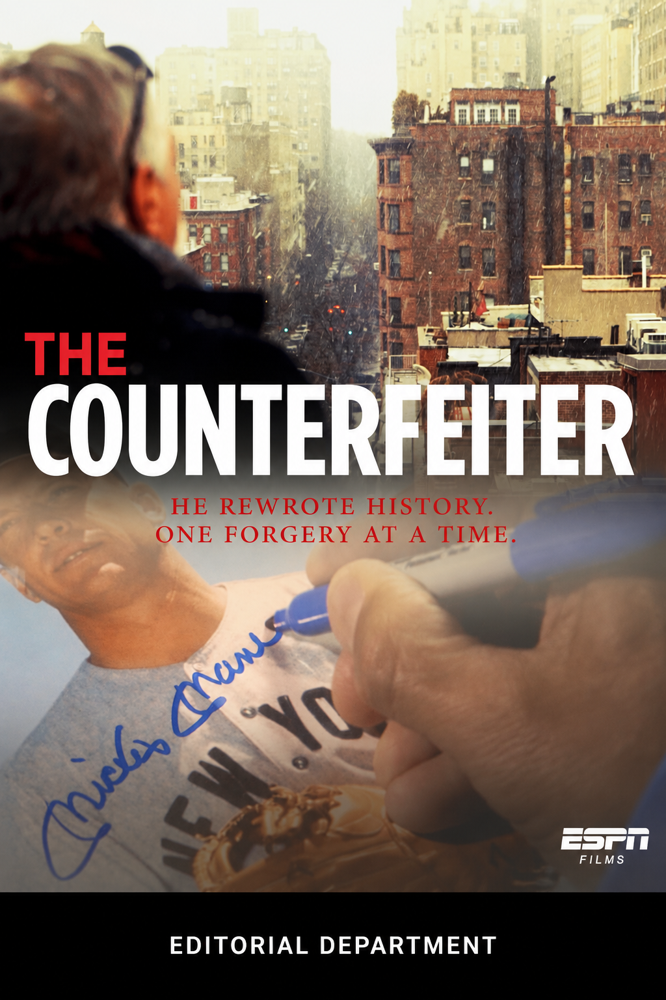
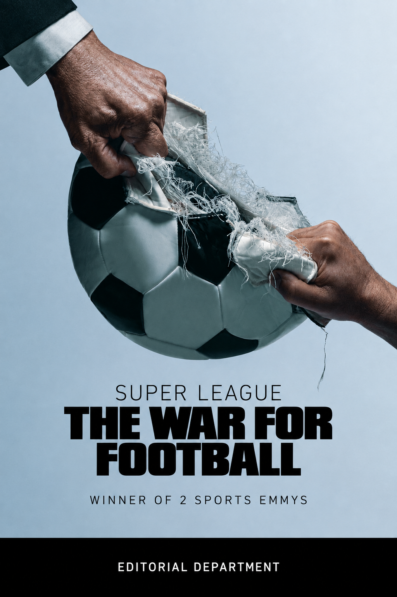
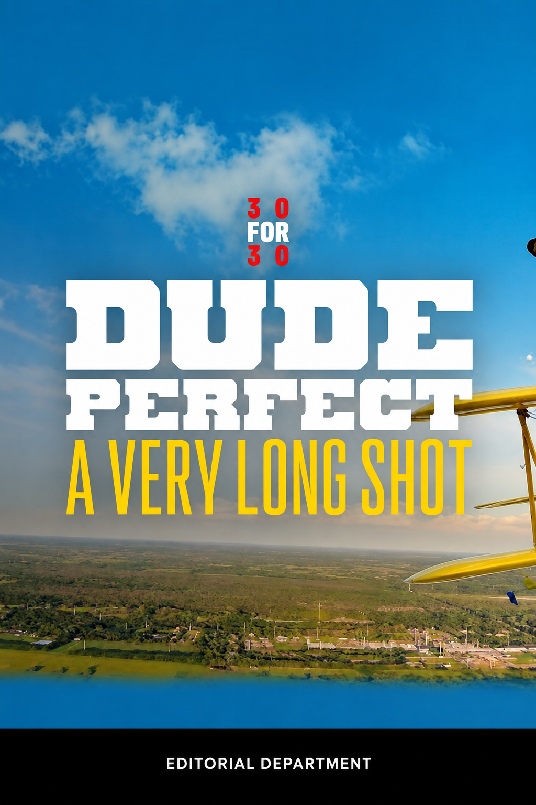
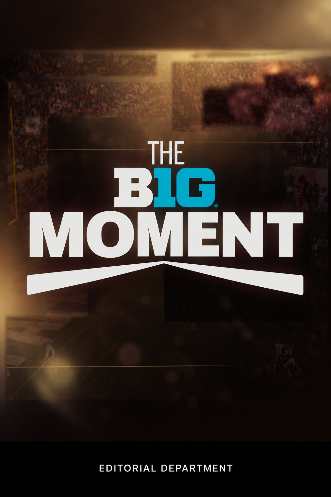
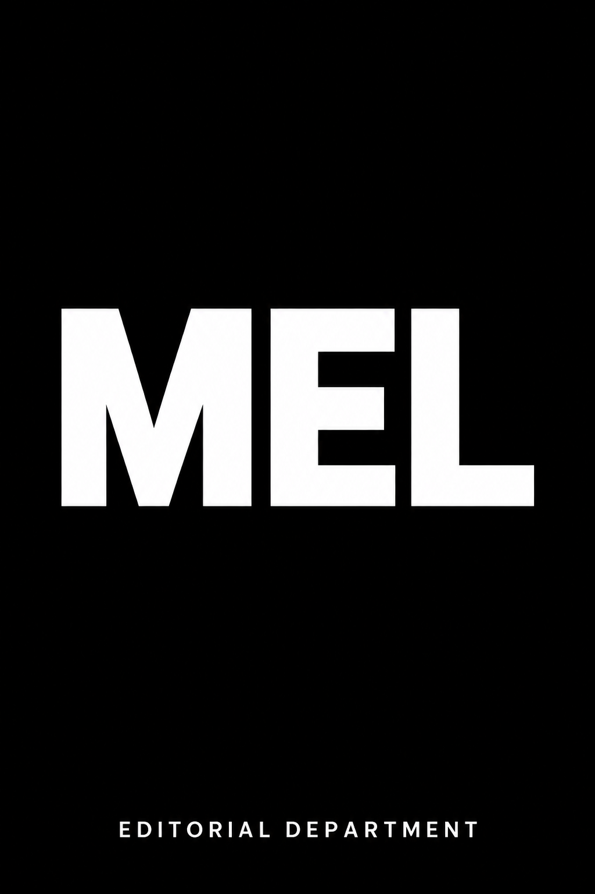
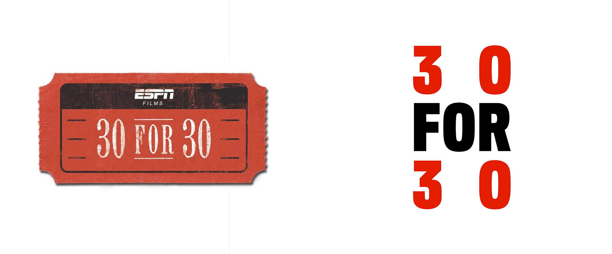
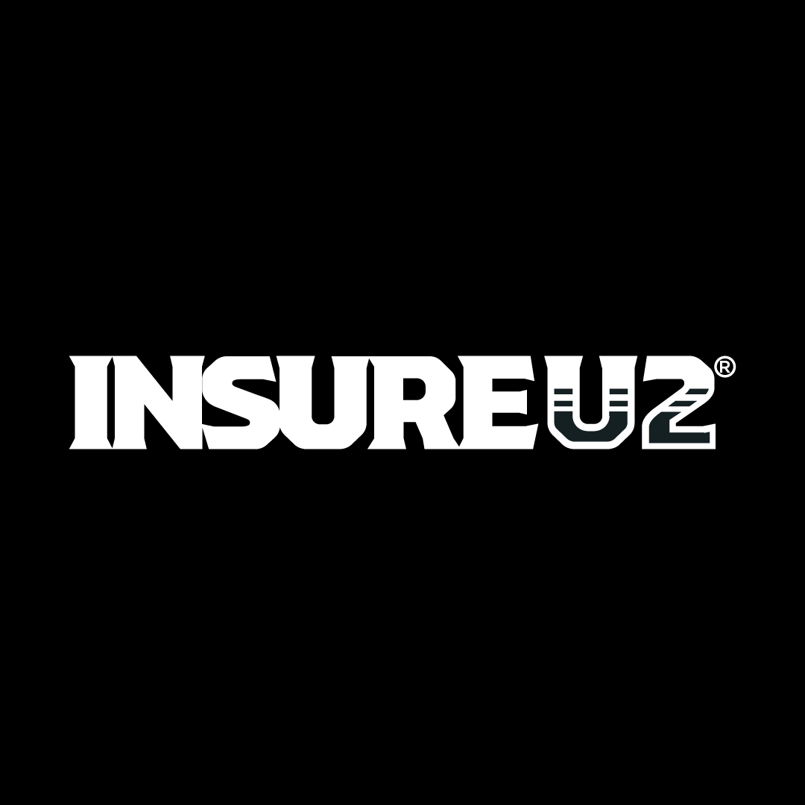
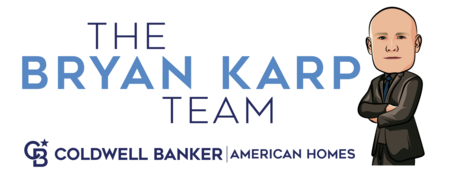
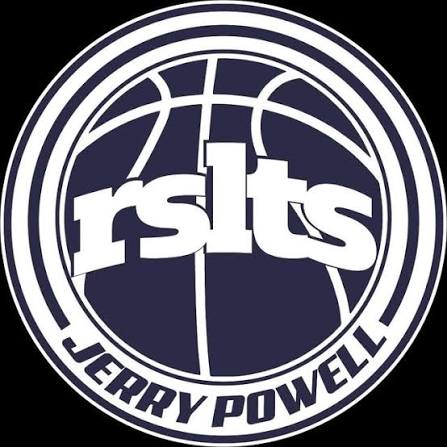

“If I’m not behind a camera, I’m in front of a computer.”
I’m Justin Starr. I make documentary-style videos, brand stories, and long-form, story-driven content.
Video is, by far, the most powerful medium for telling a story. A good story holds your attention, but a great story leaves you feeling something.
Explore the stories01 / Selected stories
stories.
Documentary · Brand · Events
The Giant
Loading the videos…
02 / Editorial department
broadcast work.
Alongside my independent video work, I’ve contributed to editorial departments on broadcast documentaries and series.
I bring a strong technical understanding of post-production, with proficiency across multiple NLEs and the wider range of software used throughout the industry. I’m comfortable moving between platforms, adapting to different production workflows, and working through complex technical challenges.
The details matter: how material is organized, how systems work together, and how decisions made at one stage affect everything that follows. That combination of technical precision and attention to detail is what I bring to an editorial team.






03 / Testimonials
their words.
I’ve had a positive experience working with Justin. He’s been professional, easy to communicate with, and receptive to feedback throughout the process. I appreciate his approach and the effort he puts into his work

Craig BenderINSUREU2Working with Justin has been a great experience. He's talented, easy to work with, and brings care and attention to every project we've collaborated on.
I’ve worked with Justin from Filmstar for over a decade, and he is absolutely exceptional—his creativity, visual storytelling, cinematography, and editing are on another level! His ability to turn a vision into powerful content that builds your brand makes him the best videographer I’ve ever worked with. Justin is a true creative consultant who brings tremendous value to your content creation, brand building, and marketing! 💪

The Bryan Karp TeamJustin Starr is a pleasure to work with! Whether you need film recording, audio or editing, Justin is extremely skilled at getting the job done right! He's adaptable to each unique situation, stays calm and collected throughout the process and makes video production feel stressless. I strongly recommend Justin's company filmstarr!
I was blown away with how our workout video came out. Justin was able to capture more than just a workout—he showcased all of the teaching, communication, and attention to detail that go into what I do. The video felt authentic to me and my business, and I was really happy with how it came together in the end.

Crason PuriefoyTrainer · Basketball ResultsYour next project
Let’s talk.
Tell me what you have in mind.
A rough idea is a good place to start.